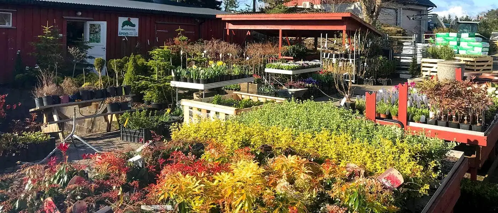

Fagfolkene
Her kommer bilde og navn på dem du møter i hagesenteret og ute på jobb – med fagbrev og spesialfelt.

Hagesenter med egen planteskole, anleggsgartner for hele uterommet, og brøyting for private og bedrifter.
Hagesenteret: man–fre 09–16, lør 09–15
Besøk hagesenteret Få tilbud på hagearbeidSommerblomster, stauder, roser, trær og hekk – med råd fra folk som dyrker selv.
Hagesenter og planteskole ➜Belegningsstein, murer, trapper, plen og beplantning – planlagt og utført.
Anleggsgartner ➜Brøyting, strøing og drift av utearealer – med fast avtale.
Brøyting og drift ➜Sortimentet varierer med vær og sesong – ring gjerne før du kommer for noe bestemt.
Følg oss på Facebook for dagsaktuelle tilbud.
Siden 1965 har Ødegårdens Planteskole og Utemiljø produsert og viderekultivert planter. Vintergrønne planter kultiveres i planteskolen på Bergemoen, og trær dyrkes også på eget felt i Tovdal.
Fordi plantene vokser opp under norske forhold, er de vant til klimaet de skal stå i når de kommer hjem til deg.

Dra i håndtaket eller bruk piltastene. Etterbildene er ekte jobber fra Ødegården. Førbildene er KI-genererte illustrasjoner – ikke bilder av stedet før jobben.
Vi brøyter, strør og feier parkeringsplasser, gårdsrom og adkomstveier, og drifter grøntarealer, parker og idrettsanlegg gjennom hele året.
Her kommer bilde og navn på dem du møter i hagesenteret og ute på jobb – med fagbrev og spesialfelt.
Her kommer en ekte kundeomtale – med navn og tillatelse fra kunden.
Her kommer et utvalgt prosjekt med sted, omfang og bilder – privat eller næring.
Helligdager og endrede tider i høst- og vintersesongen meldes på Facebook.
37 04 31 02 eller 908 60 707
post@odegardens.no
Bergeveien 8, 4886 Grimstad
Ta av fra E18 mot Vesterled, ta av til Bergemoen og kjør inn til venstre i Bergeveien.